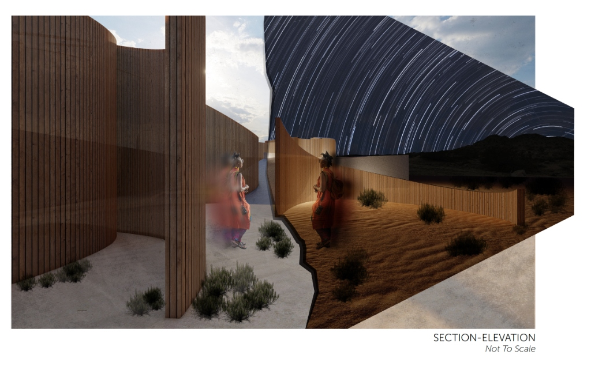
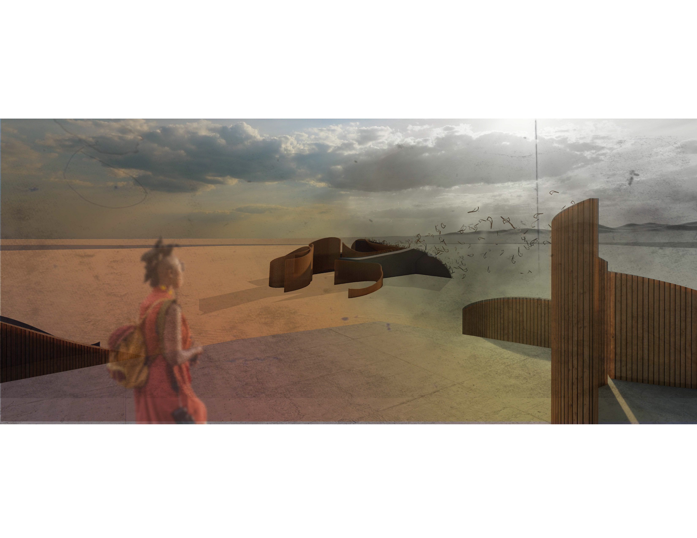
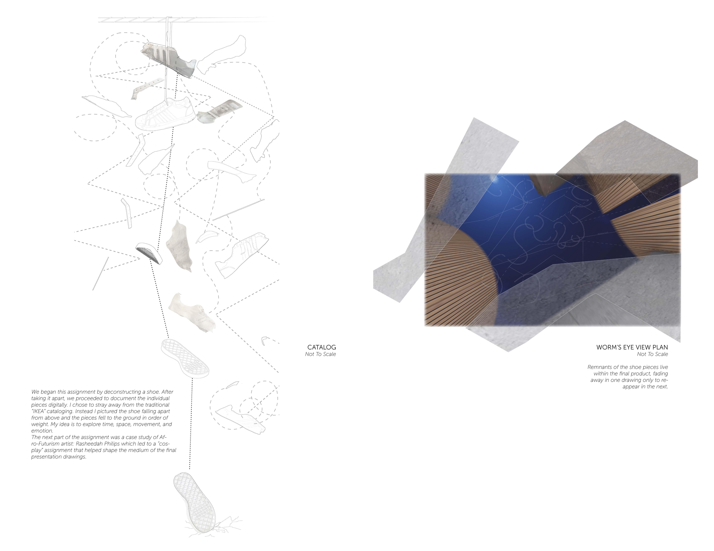
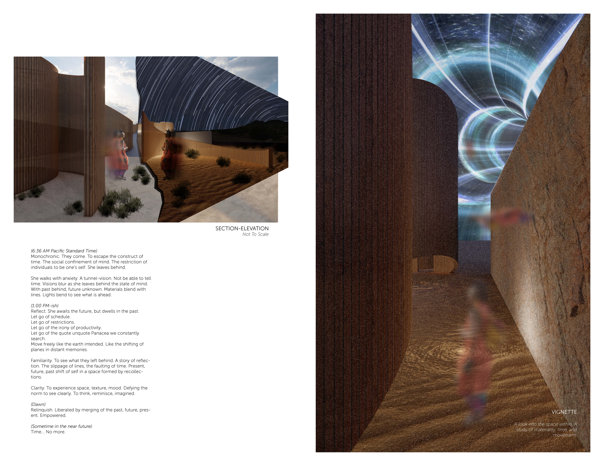

Cal Poly Pomona Undergraduate
LANDERS WRITERS RETREAT
Architecture / Academic
Located in the Mojave Desert, the Landers Writers Retreat is both a writers' residence and a digital detox — a place designed to dissolve the concept of time. The architecture is organized as a sequential procession that draws the writer away from the external world and into increasingly intimate spaces of solitude, stripping away the markers of daily life until all that remains is the desert, the body, and the creative act. Walls frame and filter the landscape, alternating between exposure and enclosure, so that the vastness of the Mojave becomes less a backdrop than a spiritual instrument — an environment of radical stillness that reconnects the writer to the most elemental conditions of thought and creativity.
Project Documentation
A sequential procession that dissolves the concept of time.


